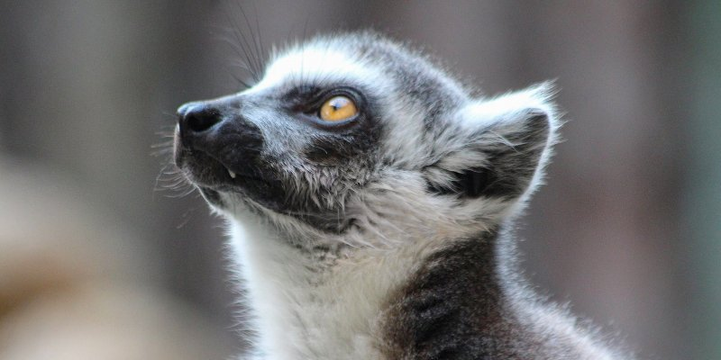
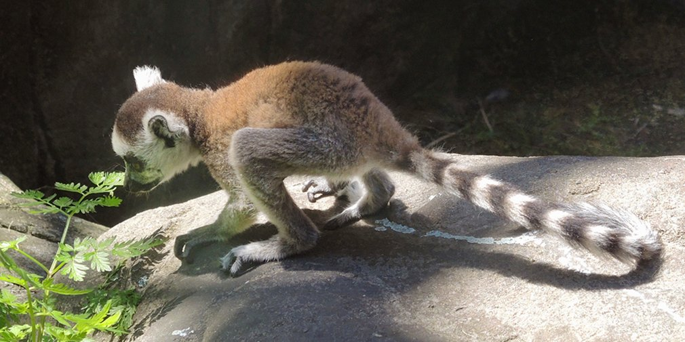

Непоседливый зверек Мадагаскара: в зоопарке родился детеныш редкого кошачьего лемура
Малыш уже изучает окружающий мир и перенимает повадки старших сородичей
В Московском зоопарке родился детеныш редкого кошачьего лемура. Потомством обзавелись шестилетняя самка Бэлла и десятилетний самец Фунтик.
«В коллекции зоопарка представлена группа из восьми мадагаскарских лемуров, в том числе один новорожденный. Малыш Бэллы и Фунтика пока еще очень мал и уязвим. Любопытный зверек уже начал изучать окружающий мир самостоятельно, а если он устает, то перебирается на спину к сестре или матери. Когда детеныш подрастет, он может отправиться в один из ведущих российских или зарубежных зоопарков», — рассказала Светлана Акулова, генеральный директор Московского зоопарка.
До трех месяцев лемур будет питаться исключительно материнским молоком, а затем начнет пробовать взрослую пищу. У этих приматов разнообразный рацион. В него входят всевозможные фрукты и овощи, орехи, яйца и насекомые. В меню также включены специальные витаминные и минеральные добавки.
Вольер кошачьих лемуров расположен на новой территории Московского зоопарка, возле павильона «Дом приматов». Другие лемуры дружелюбно приняли нового члена семьи и даже позволяют ему посидеть у себя на спине. Детеныш активно исследует свой дом и перенимает повадки старших сородичей.
Пока территория зоосада закрыта для посетителей, понаблюдать за развитием малыша можно в режиме онлайн. На страницах зоопарка в социальных сетях планируется размещать видеозаписи о жизни представителей этого вида приматов.
История вопроса
Как и многие другие учреждения в городе, Московский зоопарк временно не принимает посетителей в связи с угрозой распространения коронавируса. Понаблюдать за жизнью обитателей зоосада можно в режиме онлайн. Прямые трансляции проводят из вольеров больших панд, орангутанов, саймири и мартышек диан. Показательные кормления питомцев тоже записывают на видео.